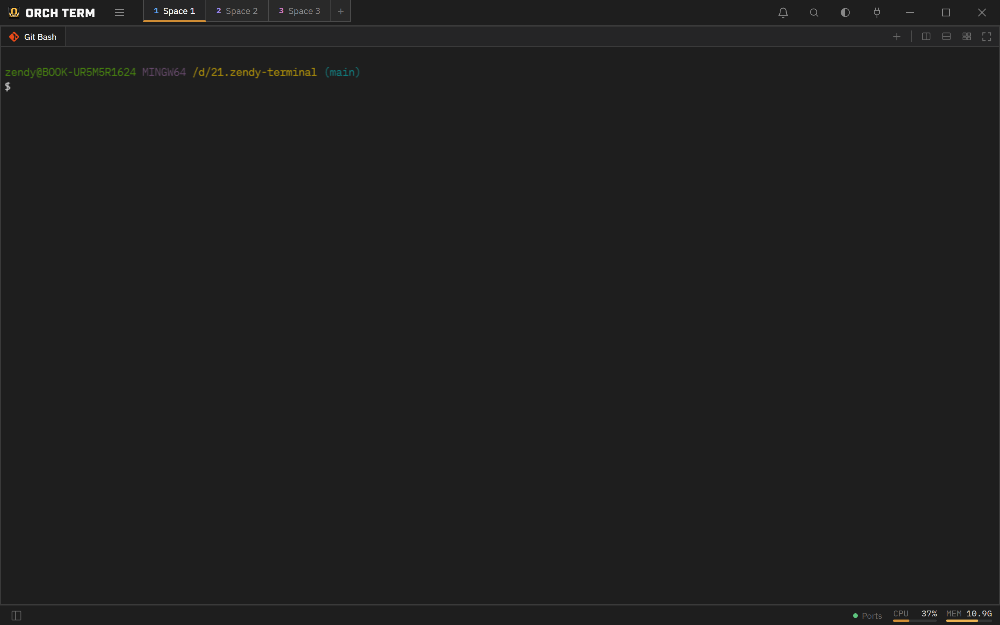

Core features · Terminal
Terminal
The foundation of Orch term. It renders real shell sessions fast and handles Korean/English input, emoji, and newlines smoothly.
Open a new terminal
Open one with the new-tab button or the actions in the top-right of a pane. A new terminal starts at the active project root (per the Explorer). Pressing ＋ opens a picker dropdown that auto-detects installed shells.
The chosen shell opens as a new tab in the active pane. Even the first key you press right after startup is never lost.

Copy · paste
Ctrl+C copies when there's a selection, otherwise it acts as an interrupt, and Ctrl+V pastes — working regardless of the Korean/English input state. Windows clipboard history (Win+V) is supported too, and pasting an image attaches it as a file so claude and others read it directly.
Newlines (without submitting)
When entering multiple lines into an AI CLI (Claude Code, etc.), use Shift+Enter or Ctrl+Enter to send a newline instead of submitting. Characters and their order are preserved even mid-composition in Korean input.
Scrollback · jump to bottom
The number of history lines the terminal keeps (scrollback) defaults to 1,000 lines; adjust it to 100–50,000 lines under Settings → Terminal → Scrollback, applied instantly. When you scroll up, a jump to bottom button appears in the bottom-right to jump to the latest output.
Shell exit · auto-close
When the shell ends (exit), the tab closes automatically. If it's a single pane with a single tab, it's replaced with a new terminal instead of an empty screen. Closing a tab cleans up the entire process tree beneath it, leaving no zombie processes.
Keyboard shortcuts
| Key | Action |
|---|---|
| Ctrl+C | Copy if selected, otherwise interrupt |
| Ctrl+V | Paste (including Win+V) |
| Shift+Enter | Newline (no submit) |
| Ctrl+Enter | Newline (no submit) |